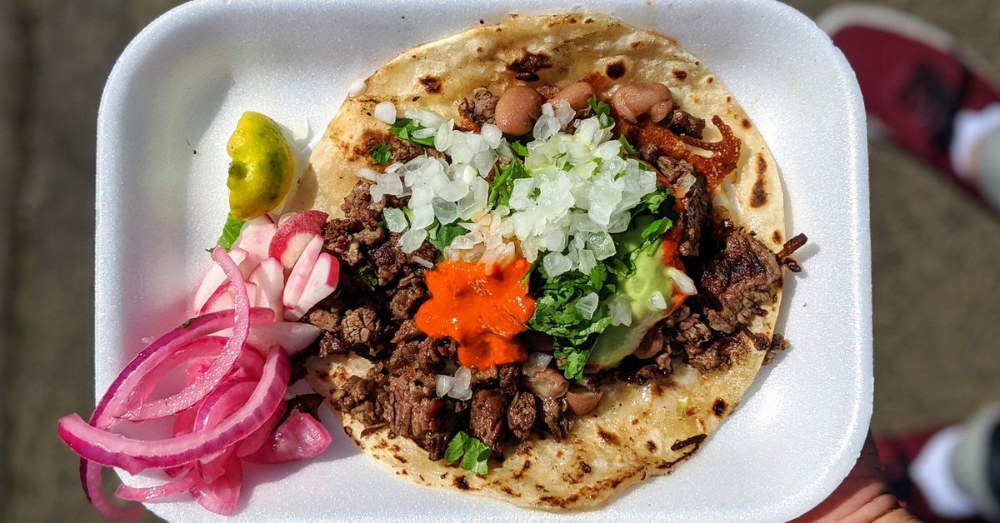

Tacos

Description
This classic taco recipe from the depths of west Ventura will be sure to channel your inner cholo.
Ingredients
- Corn tortillas
- Your meat of choice that is primarily pre-marinated (pollo, asada, carnitas)
- Onions
- Cilantro
- Salsa of your choice
Steps
- Rougly chop the onions and cilantro.
- Heat pan over medium-high heat and add oil.
- Add oil and once that is sizzling, add the meat and cook through.
- Take the meat off of heat and warm the tortillas.
- Place the mixture on the tortillas and add the toppings.